卡西欧XJ-UT255超短焦型wifi投影仪
★★★★☆
March 14, 2016107visits
1．外观篇
初见卡西欧UT255感觉与以往见过的反射短焦投影有些不同，大多数这类投影机的在机身上会发现一个很明显或球面或平面的反射镜，说它不同是因为UT255将反射镜内置在机身里面，并且是采用的凹面镜，不仅外表看起来更加美观，而且还减少了反射镜受损概率，同时凹面反射镜能够实现更短的投射比，投影画面不容易畸变。
单从表面来看，我并未发现该机的接口在哪里，直到将机身翻转才发现。原来接口设计在机身侧面，同时在接口的外面设置了符合机身圆角设计的外壳，从外面是根本看不到接口的，相比一般投影机来说，更具有美观性。即使在应用时需要连接不通的传输线，也完全可以很规整的将线缆隐藏在里面。
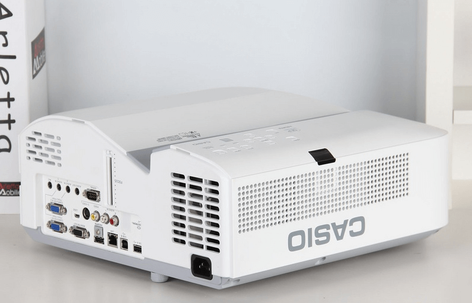
初见卡西欧UT255感觉与以往见过的反射短焦投影有些不同，大多数这类投影机的在机身上会发现一个很明显或球面或平面的反射镜，说它不同是因为UT255将反射镜内置在机身里面，并且是采用的凹面镜，不仅外表看起来更加美观，而且还减少了反射镜受损概率，同时凹面反射镜能够实现更短的投射比，投影画面不容易畸变。
单从表面来看，我并未发现该机的接口在哪里，直到将机身翻转才发现。原来接口设计在机身侧面，同时在接口的外面设置了符合机身圆角设计的外壳，从外面是根本看不到接口的，相比一般投影机来说，更具有美观性。即使在应用时需要连接不通的传输线，也完全可以很规整的将线缆隐藏在里面。
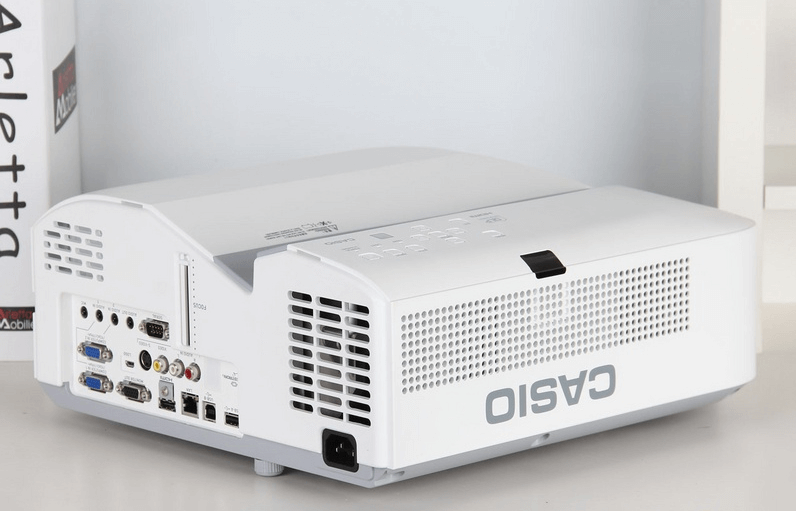
2．功能篇
该机在接口方面提供了VGA、、HDMI、Video、S-Video、LAN、USB-A、USB-B、Audio、MIC及RS-232C等接口，完全可以满足教育演示用户使用需求。机身面板设置有信号源、控制菜单、电源开关等按键，用户可在无遥控器的情况下轻松调节投影机。
该机还同时配备了相应的智能APP C-Assist软件，并且提供了PC版，让智能化彻底走进课堂。老师可以通过下载智能软件，与投影机进行无线连接，实现无线同屏显示，在笔记本或者智能移动终端上进行教学演示，不管站在教室哪里都可以进行轻松授课。
面对讲究高效的商务办公用户，UT255还提供了内置2GB存储空间直读功能，可以将会议简报所要演示的PPT、Word、Excel等文件事先传输至投影机内，需要使用时就能方便的进行读取，不必再连接笔记本电脑。该机同时还支持4分屏功能，可连接8台电脑，最多4台同时投影。
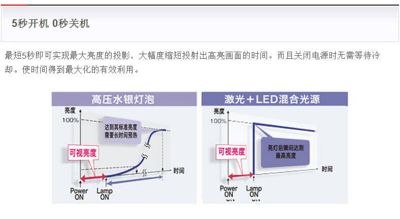
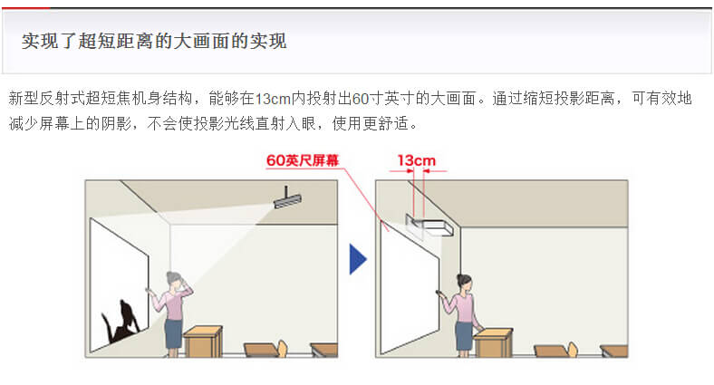

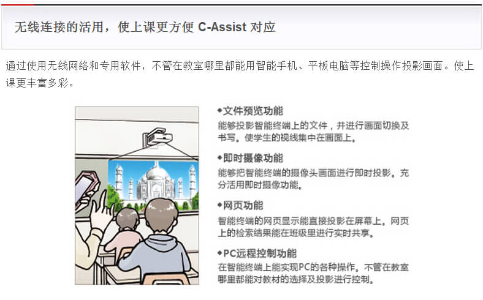
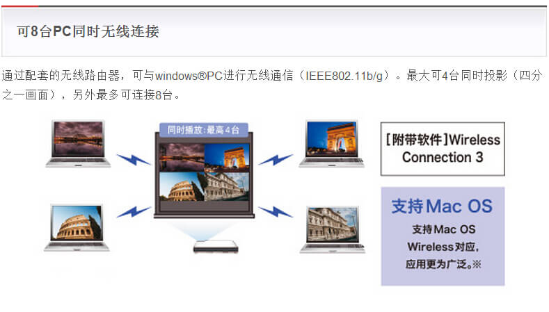
该机在接口方面提供了VGA、、HDMI、Video、S-Video、LAN、USB-A、USB-B、Audio、MIC及RS-232C等接口，完全可以满足教育演示用户使用需求。机身面板设置有信号源、控制菜单、电源开关等按键，用户可在无遥控器的情况下轻松调节投影机。
该机还同时配备了相应的智能APP C-Assist软件，并且提供了PC版，让智能化彻底走进课堂。老师可以通过下载智能软件，与投影机进行无线连接，实现无线同屏显示，在笔记本或者智能移动终端上进行教学演示，不管站在教室哪里都可以进行轻松授课。
面对讲究高效的商务办公用户，UT255还提供了内置2GB存储空间直读功能，可以将会议简报所要演示的PPT、Word、Excel等文件事先传输至投影机内，需要使用时就能方便的进行读取，不必再连接笔记本电脑。该机同时还支持4分屏功能，可连接8台电脑，最多4台同时投影。
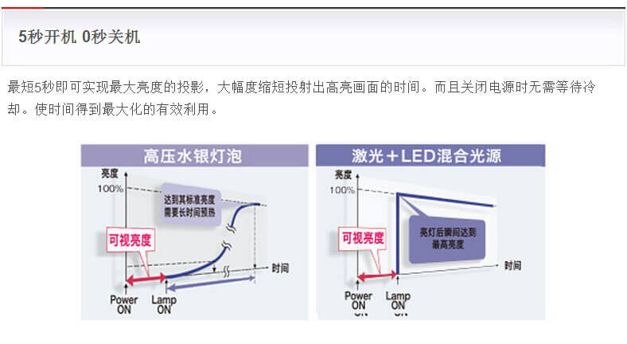
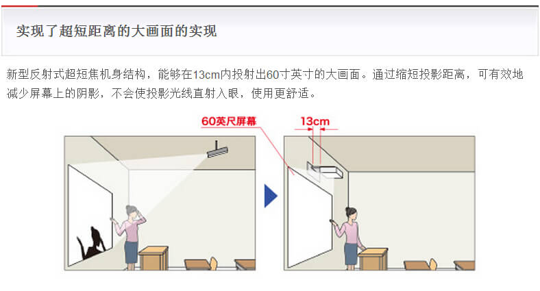
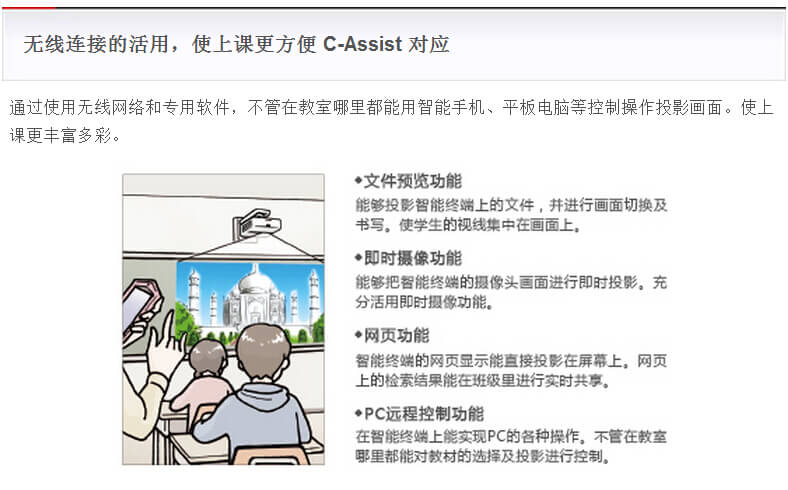
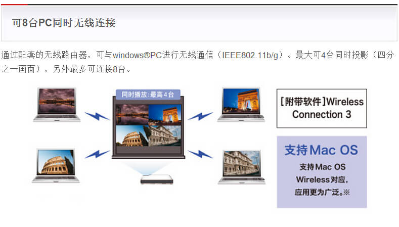
3．测试篇
卡西欧UT255新光源反射超短焦投影机特点：
1、采用激光+LED新光源，寿命长达20000小时
2、色域范围覆盖更广
3、独立式防尘设计
4、真实的客观数据表现
5、支持智能APP软件互动
6、具备2GB内置存储及USB脱机直读功能
7、美观的外形设计，丰富的接口
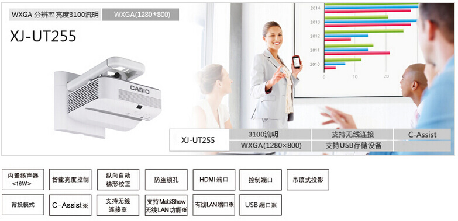
相对不足：
1、对焦效果有待更进一步完善
2、蓝色有出现轻微偏紫情况
评测总结：
卡西欧UT255投影机采用激光+LED新光源，拥有20000小时长小时灯泡寿命，减少用户后续维护的成本；采用凹面反射将，实现0.28超短投射比，投射100吋画面仅需0.66米，提升空间的利用率；真实的客观数据，保证了投影画面的质量；通过智能软件可实现智能化教学，是智能化教学首选的机型。
标签：CASIO，投影，短焦，教学，影院
价格：22500元
卡西欧UT255新光源反射超短焦投影机特点：
1、采用激光+LED新光源，寿命长达20000小时
2、色域范围覆盖更广
3、独立式防尘设计
4、真实的客观数据表现
5、支持智能APP软件互动
6、具备2GB内置存储及USB脱机直读功能
7、美观的外形设计，丰富的接口
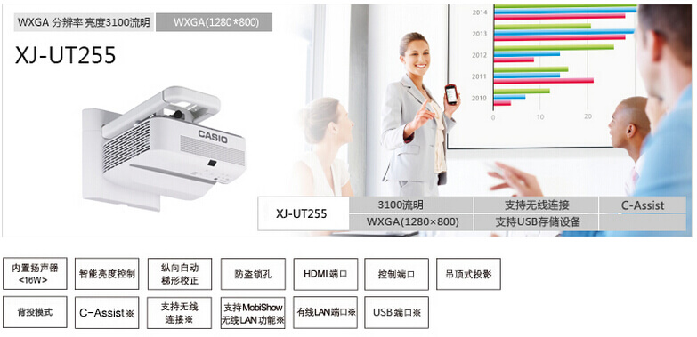
相对不足：
1、对焦效果有待更进一步完善
2、蓝色有出现轻微偏紫情况
评测总结：
卡西欧UT255投影机采用激光+LED新光源，拥有20000小时长小时灯泡寿命，减少用户后续维护的成本；采用凹面反射将，实现0.28超短投射比，投射100吋画面仅需0.66米，提升空间的利用率；真实的客观数据，保证了投影画面的质量；通过智能软件可实现智能化教学，是智能化教学首选的机型。
标签：CASIO，投影，短焦，教学，影院
价格：22500元